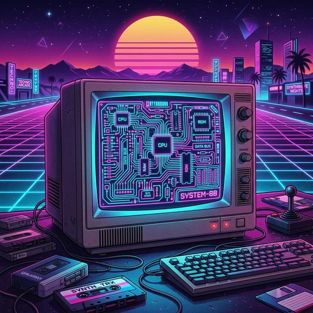

> INIT: Loading profile...
> System status: 6th semester Computer Science student at Silesian University of Technology.
> Mission: Bridging hardware and software via deep-level code.

An intelligent training system that monitors ball movement dynamics, measuring impact force (up to 400g) and rotation parameters in real-time.
Equipped with H3LIS331DL & L3G4200D. Processes raw motion data, compensates for gravity using quaternions, detects strikes using a circular buffer.
Connects via Wi-Fi AP and receives processed stats over a high-speed binary UDP protocol.
> Passions: Embedded systems, Software Engineering, hardware-level architecture.
> Looking for an internship to develop commercial projects utilizing SOLID and Clean Code.
Faculty: Auto Control, Electronics & CS
Status: 3rd Year (6th Sem) B.Eng.
Subjects: Algorithms, OOP, Systems Architecture
ADV: C++
INT: C, Python, Java, Kotlin
BEG: C#, TypeScript, Swift
MCU: ESP32, PIC
ASM: Intel x86 (MASM, NASM)
CAD: Linux, Fusion360
Clean Code, SOLID, DRY
OOP, Algorithms
Unit Testing (JUnit 5)
MOB: Android Studio, Xcode
DESK: Qt, PyQt, Avalonia
WEB: Node.js, SQL, MongoDB
Java | Payara | JDBC
A simulation of interactions between sellers and customers. Includes inventory management, automatic fund deductions, and 100% unit-tested logic via JUnit 5. Features a web frontend.
.NET | Python | Node.js
Microservices architecture for remote control and real-time monitoring of virtual devices. Uses Python as a mediator between a C# panel and Node.js emulated hardware over MQTT/REST.